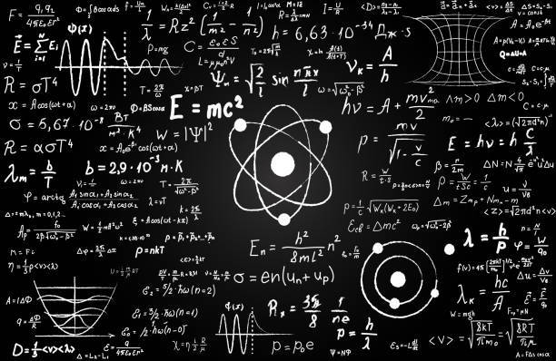
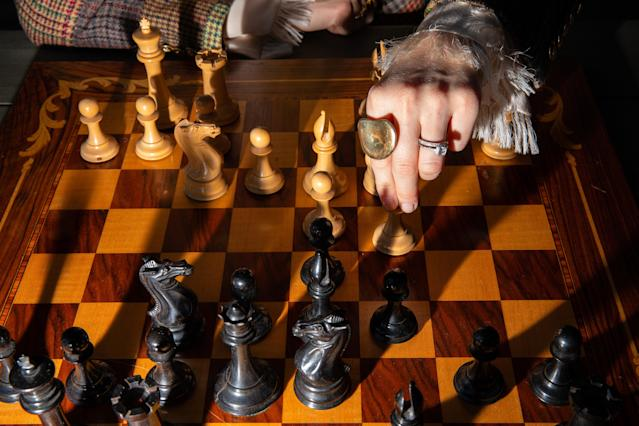

Torneo de Ajedrez zona escolar

Participe en el torneo anaul de ajedrez de mi zona escolar en el año 2017, donde pude obtener un cuarto lugar.
Concurso Talentos de Física
En segundo de secundaria entre a un Concurso de fisica, lo que despertó mi interes por la materia y pude ser preseleccionado estatal.
Torneo de Ajedrez API
En primer año de secundaria participe en un torneo de ajedrez que se organizo debido a la semana del puerto.